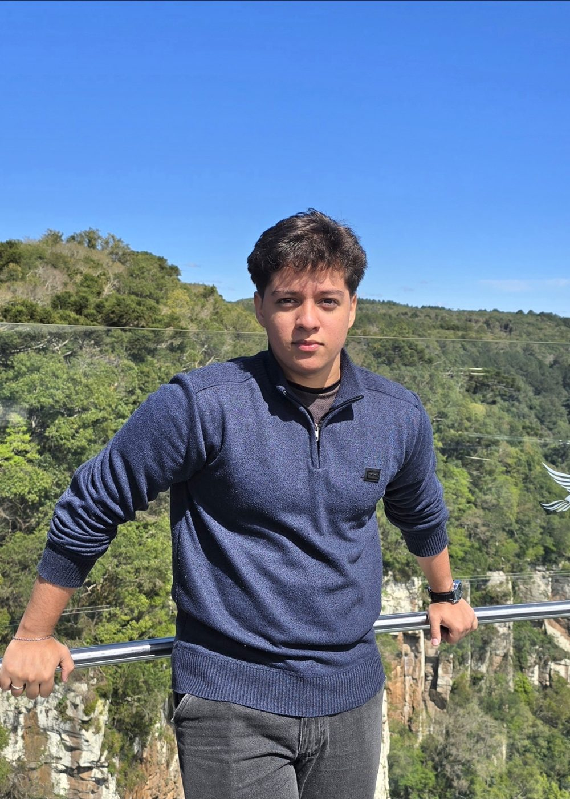
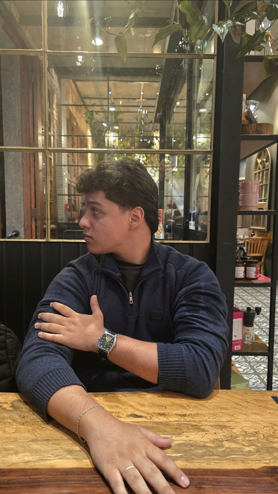

MISSÃO LC-2026 · STATUS: EM ÓRBITA
Olá, eu sou Lúcio Costa.
Construo produtos web
com IA no núcleo.
Desenvolvedor web, fundador da lu.ricos e estudante de Sistemas de Informação na UNIFESSPA. Transformo ideias em sites, apps e assistentes inteligentes — de Marabá, PA, para o mundo.
- LAT 5°22′S
- LON 49°07′W
- BASE Marabá · PA
- MODO Aberto a estágio

Sobre
// relatório da tripulação


Sou um dev curioso que aprende rápido, trabalha com autonomia e gosta de levar um produto do zero ao lançamento.
Comecei empreendendo: criei a lu.ricos, um e-commerce de relógios onde cuido de tudo — sourcing, precificação, estoque em Excel, atendimento e o próprio site, incluindo o LU.BOT, um assistente de IA que recomenda produtos pelo perfil do cliente.
Hoje estudo Sistemas de Informação na UNIFESSPA, construo o StudyAI (EdTech com RAG) e faço sites para negócios locais. Também tenho certificação Google em Suporte de TI e um olho atento para design — boa parte das minhas apresentações nasce no Canva.
Projetos
// missões lançadas
Tudo aberto em github.com/Luciocosta1302 ↗
Designs
// apresentações & materiais visuais
Comunicação visual também é engenharia: apresentações acadêmicas, guias acessíveis e relatórios de dados que desenhei no Canva.
Stack
// sistemas a bordo
Trajetória
// log de voo
Certificados
// insígnias de missão
CANAL ABERTO
Vamos construir
a próxima missão?
Estou aberto a estágio em TI / desenvolvimento, freelas e projetos com IA.